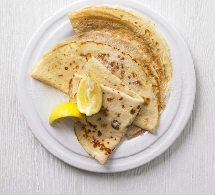

Easy pancakes

Learn a skill for life with our foolproof crêpe recipe that ensures perfect pancakes every time – elaborate flip optional
ingredients
- 100g plain flour
- 2 large eggs
- 300ml milk
- 1 tbsp sunflower or vegetable oil, plus a little extra for frying
- lemon wedges to serve (Optional)
- caster sugar to serve (optional)
- Put 100g plain flour, 2 large eggs, 300ml milk, 1 tbsp sunflower or vegetable oil and a pinch of salt into a bowl or large jug, then whisk to a smooth batter.
- Set aside for 30 mins to rest if you have time, or start cooking straight away.
- Set a medium frying pan or crêpe pan over a medium heat and carefully wipe it with some oiled kitchen paper.
- When hot, cook your pancakes for 1 min on each side until golden, keeping them warm in a low oven as you go.
- Serve with lemon wedges and caster sugar, or your favourite filling. Once cold, you can layer the pancakes between baking parchment, then wrap in cling film and freeze for up to 2 months.